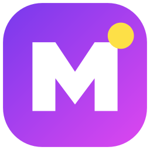
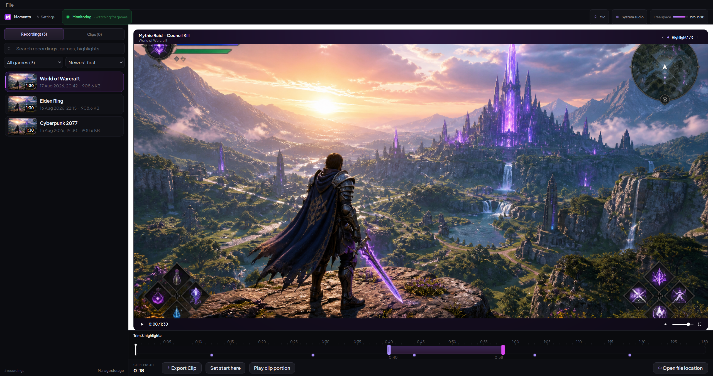

A local Windows game recorder with a built-in clip editor. Upload only the clips you choose.

The real Momento interface, shown with sample media.
Momento sits quietly in your system tray. When it detects a game launching, it starts capturing the game's window via Windows Graphics Capture along with your microphone and the system's audio output. When the game closes, recording stops automatically and the resulting MKV file lands in your chosen folder.
The built-in editor lets you browse past recordings, trim clips, drop bookmarks during gameplay with a hotkey, and export final cuts as MP4. First-run setup helps you choose audio devices and a recording folder, then applies sensible defaults for frame rate and quality.
Uses a configurable games list. Add executable names and toggle individual games on or off.
Timeline with trim handles, zoom, bookmark ticks, time inputs. Preview playback before export.
Press F8 mid-game to drop a marker. Find the highlight instantly when editing afterwards.
MKV recording improves recovery after an interruption. A repair tool handles files with enough surviving container data.
Low, Medium, High, or a custom bitrate. Compatible hardware encoding reduces CPU use, with a software fallback available.
Recordings and clips stay on your PC unless you select one for YouTube upload. Momento has no cloud library or background upload.
Momento-Updater/1 User-Agent.Optional YouTube upload with your Google project.
The public build includes upload controls but no Google OAuth identity. Import a Desktop OAuth JSON from a project you control, then connect through Google's browser flow. Momento encrypts the imported client and account token with Windows DPAPI. Read the setup guide or the privacy policy.
Windows 10 (1903 or newer) or Windows 11.
A hardware H.264 encoder is recommended. Momento checks NVIDIA NVENC, AMD AMF, Intel QuickSync, and Media Foundation against the requested recording profile. If none can open, it falls back to CPU encoding and displays a warning.
Keep at least 10 GB free for the app and a recording buffer. The default 16 Mbit/s capture setting uses roughly 7.2 GB per hour plus audio and container overhead.